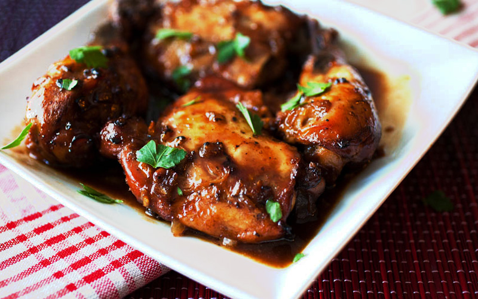
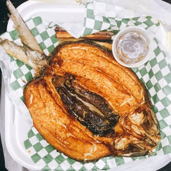
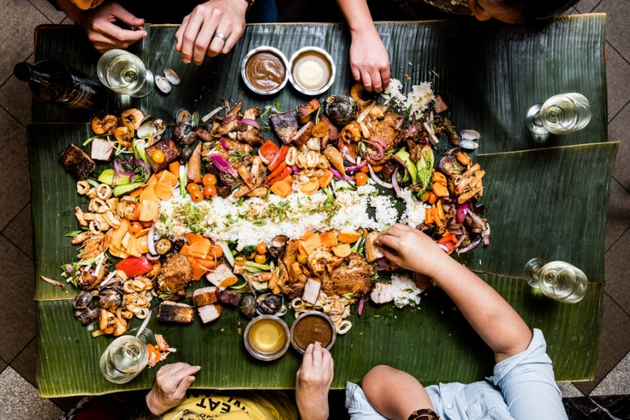
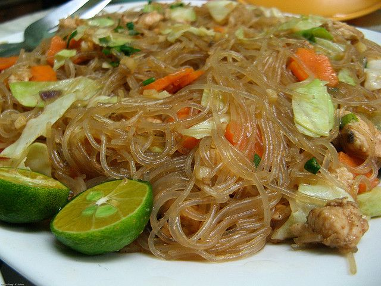

| Home | Cuisine | Recipe | Ingredients | About |
Filipino cuisine has austronesian origins and mix many cultures together, including Indian, Japanese, Chinese, and American dishes. Meals can be simple fried fish and rice to complicated paellas and cocidos. One of the important aspects of Filipino cuisine is to pair sweet and salty foods together.
|  |  |  |  |

|

|
Additional Information Common Ingredients Rice, seafood, goat meat, Bay Leaves Techniques boiling, grilling, roasting, steaming Dishes Grilled Chicken Adobo, Pancit, Lumpia, Lechon, Sisig Climate Tropical |